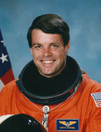

Lyndon B. Johnson Space Center
Houston, Texas 77058
|
National Aeronautics and Space Administration Lyndon B. Johnson Space Center Houston, Texas 77058 |
 |
Biographical Data |
||
Kevin R. Kregel
NASA ASTRONAUT (FORMER)
PERSONAL DATA: Born September 16, 1956. Grew up in Amityville, New York. Married to the former Jeanne F. Kammer of Farmingdale, New York. They have four children. His parents, Alfred H. Kregel Jr., and Frances T. Kregel, are deceased.
EDUCATION: Graduated from Amityville Memorial High School, Amityville, New York, in 1974; received a bachelor of science degree in astronautical engineering from the U.S. Air Force Academy in 1978; master's degree in public administration from Troy State University in 1988.
SPECIAL HONORS: Defense Meritorious Service Medal; Air Force Meritorious Service Medal; Air Force Commendation Medal; Navy Commendation Medal; four NASA Space Flight Medals; NASA Exceptional Service Medal.
EXPERIENCE: Kregel graduated from the U.S. Air Force Academy in 1978, and earned his pilot wings in August 1979 at Williams Air Force Base, Arizona. From 1980 to 1983 he was assigned to F111 aircraft at RAF Lakenheath. While serving as an exchange officer flying A-6E aircraft with the U.S. Navy at NAS Whidbey Island, Seattle, and aboard the USS Kitty Hawk, Kregel made 66 carrier landings during a cruise of the Western Pacific. His next assignment was an exchange tour at the U.S. Naval Test Pilot School at Patuxent River, Maryland. Upon graduation he was assigned to Eglin AFB, Florida, conducting weapons and electronic systems testing on the F111, F15, and the initial weapons certification test of the F15E aircraft. Kregel resigned from active duty in 1990 in order to work for NASA. He has logged over 5,000 flight hours in 30 different aircraft.
NASA EXPERIENCE: In April 1990, Kregel was employed by NASA as an aerospace engineer and instructor pilot. Stationed at Ellington Field, Houston, Texas, his primary responsibilities included flying as an instructor pilot in the Shuttle Training Aircraft (STA) and conducting the initial flight test of the T38 avionics upgrade aircraft.
Selected by NASA in March 1992, Kregel reported to the Johnson Space Center in August 1992. He completed one year of training and is qualified for assignment as a pilot on future Space Shuttle flight crews. Technical assignments include serving on the Astronaut Support Personnel team at the Kennedy Space Center in Florida supporting Space Shuttle launches and landings, CAPCOM in Mission Control, Deputy for the Astronaut Office Space Station Branch, and the Orbital Space Plane Project. A veteran of four space flights, Kregel has logged 52 days, 17 hours, 20 minutes and 5 seconds in space. He was the pilot on STS-70 (July 13-22, 1995) and STS-78 (June 20 to July 7, 1996), and was the spacecraft commander on STS-87 (November 19 to December 5, 1997) and STS-99 (February 11-22, 2000). Kregel resigned from NASA in December 2003 in order to pursue private interests.
SPACE FLIGHT EXPERIENCE: STS-70 Discovery (July 13-22, 1995) was a 9-day mission during which the crew performed a variety of experiments in addition to deploying the sixth and final NASA Tracking and Data Relay Satellite. The mission was completed in 142 orbits of the Earth, traveling 3.7 million miles in 214 hours, 20 minutes. STS-70 was the first mission controlled from the new combined control center.
STS-78 Columbia (June 20 to July 7, 1996) was a 16-day Life and Microgravity Spacelab mission. It included studies sponsored by ten nations and five space agencies, was the first mission to combine both a full microgravity studies agenda and a comprehensive life science investigation, and served as a model for future studies on board the International Space Station. STS-78 orbited the Earth 271 times, covering 7 million miles in 405 hours, 48 minutes.
STS-87 Columbia (November 19 to December 5, 1997) was the fourth U.S Microgravity Payload flight and focused on experiments to study how the weightless environment of space affects various physical processes, and observations of the Sun's outer atmospheric layers. Two members of the crew performed an EVA (spacewalk) which featured the manual capture of a Spartan satellite and also tested EVA tools and procedures for future Space Station assembly. The mission was accomplished in 252 Earth orbits during which the crew traveled 6.5 million miles in 376 hours, 34 minutes.
STS-99 ( February 11-22, 2000 ) was an 11-day mission during which the international crew aboard Space Shuttle Endeavour worked dual shifts to support payload operations. The Shuttle Radar Topography Mission mapped more than 47 million miles of the Earth's land surface. The STS-99 mission was accomplished in 181 Earth orbits, traveling over 4 million miles in 268 hours and 38 minutes.
JANUARY 2005